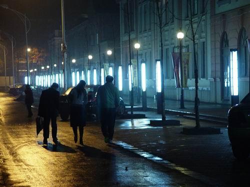
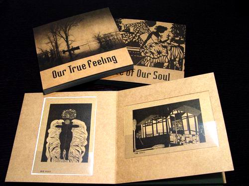
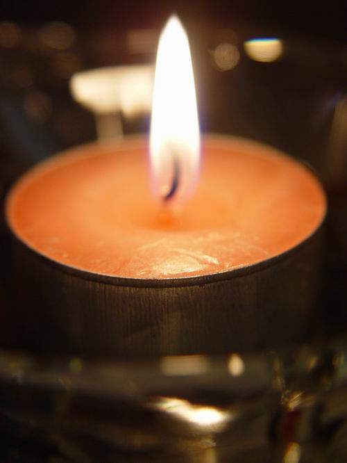
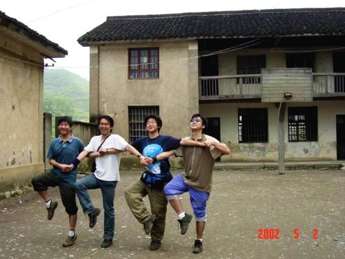

Don’t let the sun go down on us @ Dec 22, 2004
昨晚上做梦了，梦见一大团棉花糖......

Don’t let the sun go down on us
by Jerry Ting
Nikon D-100
昨晚上做梦了，梦见一大团棉花糖......
Don’t let the sun go down on us
by Jerry Ting
Nikon D-100
一个人坐在肯德基餐厅里解决午餐，那些嘈杂声仿佛在另一个时空里飘荡，我静静地躺在自己的思绪里荡漾，窗外的街景并不好看，但因为是流动的，所以总令人期待，好似人生。

没有闹钟的铃声，习惯性的在早晨7：30醒来，打开台灯继续看昨晚那本书，一边听他用英语说着梦话，就这么磨蹭到快9点起床。往常睡醒后和姐姐妹妹们一样都在为穿什么衣服烦恼，有时穿得赏心悦目有时又会是惨不忍睹，或满意或不满意的走出家门。只有周末的早晨是轻松的，可以不刷牙不洗脸的就坐到书桌前敲打电脑键盘了。书房里还弥漫着昨晚他抽的烟味儿，点上小蜡烛改善一下空气。说到蜡烛我想起女友昨日送我的烛台，她说你喜欢点蜡烛，我逛街看着好看就买了三个，一个给你，一个给老牛，一个自己留着用。那是一个吹萧的女天使穿着粉红色衣裙，玻璃材质越发显得烛台晶莹剔透。还不能确认究竟是放在家里还是放在办公桌上装饰用好？于是周末，它被刻意地忘在了公司。
昨晚和他跑了几家酒吧，人爆满。难怪南京的小酒吧越开越多，去年国贸楼上100平米不到的天堂隔壁酒吧，在阳光大厦那边新开了分店。去了两次，也许是因为周末的原因客人非常多，第一次和他还有一个法国帅哥去的，当我们介绍这个酒吧是以一夜情著名时，法国帅哥歪着嘴笑着问道：“one night love or one night sex?”他说他们那里十五、六岁的青少年抽烟吸毒的人比过去要多很多。中国人酷爱仿造，这种嗜好不仅体现在商品上还体现在生活方式里。下面我们又将进入怎样一个模仿时代？在酒吧见过形形色色的女孩，其中一些人只要不开口说话，就是非常美丽的动物！然而，这些美丽的动物不是被欣赏着，她们的周围总是闪烁着猎人的眼睛，随时随地都有可能被射杀，充满着刺激和诱惑。酒吧是一本人类心理学的书，那些眼神表情和行为......从小我就喜欢观察人，现在这种喜欢已经延伸到人物摄影上。前两周去摄影器材店看过实物的Canon Eos 20D，太大了。用过F717之后，我怎么还可以对相机没有要求？我现在特需要一个旅游携带方便、体积小，性能好的单反数码相机。F717携带还是不够方便，有时想悄无动静地拍一下陌生人，那个大家伙一掏出来就把对方给吓跑了。
我现在无所依赖无所欲念，就那么点小小的爱好，这是否喻示着一种衰老？当我收到礼物的时候才发现一年过去了，人们又要投身到各种沸腾的场所欢度西方人的节日，这和结婚男女盛行为无名指戴上戒指是同一种模仿。这之中有多少人信奉天主教和基督教？我和他没有互赠戒指，首先我们不是宗教徒，其次我们不相信那些繁文缛节，于是我们给自己各买了一块手表，这既实用又有纪念意义！常有人询问我们的生活计划，其实我和他什么计划都没有，和他生活在一起之后受他影响我渐渐也开始随意了，人们往往给他们注重的事物套上各种各样的形式，越想望得到越是得不到，这是一个不变的规律！“象草木一样均匀地呼吸，不去思索（刻意的），平静的生活。”这是女作家陈染在一篇文章里的话。
*他送我三本不同主题的相册，很有意思的设计。是圣诞礼物吗？

*书房里的晨烛

*暖色调的光影
*瑞典柠檬味的伏特加酒


 在电影院看完冯小刚贺岁片《天下无贼》。冯小刚：“如果说《手机》是一杆子插到生活里的话，《天下无贼》可以说是打一巴掌揉三揉，对人性和生活都充满了善意，甚至有些乌托邦式的理想主义。”好人或是坏人并不是靠长相来决定的，这是刘德华的“贼人观”，乍一听颇有哲理。“其实在生活里很多偷盗之人不是因为钱财，而是因为灵魂，《天下无贼》就是这样一个深入到贼人灵魂的故事。”
在电影院看完冯小刚贺岁片《天下无贼》。冯小刚：“如果说《手机》是一杆子插到生活里的话，《天下无贼》可以说是打一巴掌揉三揉，对人性和生活都充满了善意，甚至有些乌托邦式的理想主义。”好人或是坏人并不是靠长相来决定的，这是刘德华的“贼人观”，乍一听颇有哲理。“其实在生活里很多偷盗之人不是因为钱财，而是因为灵魂，《天下无贼》就是这样一个深入到贼人灵魂的故事。”
电影从开始女贼王丽对神祖的跪拜，而男贼王薄的嗤之以鼻就预示了影片的悲剧结尾。演傻根的王宝强是冯小刚新挖掘的新演员，傻根语言纯朴、倔强、可爱而真实，没有这个角色的存在相信盗贼们也不会演得那么出彩。整部影片里我最不喜欢的演员是李冰冰，有段在火车的酒吧里李冰冰穿着吊带裙的形象实在令人大跌眼镜，衣服根本撑不起来，不够饱满骨感太重。与《手机》里的范冰冰相比较而言，范冰冰的眼睛聚集着智慧和情感，眨眼的瞬间从睫毛上洒落出漫天星光。范伟和冯远征那出打劫的戏狂逗：“抢.....抢...劫...今天......我就要......劫......劫个色......IQ…...是什么......？ 拿......拿出来......”冯远征严肃的形象来演这幕喜剧真是无人能比，他翘着兰花指说的那句：“不许笑，这是打劫......”最最印象深刻。
我和许多人一样面对世俗险恶也是傻根式的思维和心智，但那只是开始的时候，如我女友所说。我们不仅学习如何防贼还学会如何辗转于现实社会的染缸中。在女人眼中率真朴实的傻根式男人还是很有吸引力的，女友则认为傻根不会调情，所以傻根除了要学习如何防人还要学会如何调情？傻根正是用他那种质朴感动了王丽，而王薄还活着话，他一定还会是个贼。

傍晚，天色如墨色般铺撒开来，不愿将时间耽搁在办公室里，匆匆离开公司。出大院时又遇见了那个精神病人，面颊消瘦得让人怀疑他会在某个日夜交替中悄无声息地死去。肮脏而精神亢奋，声音清晰但却不忍细听他的说辞，战栗着路过他的身旁。如今他只活在他自己的世界里了，瞧他意气风发想说就说想指点江山就指点江山的气魄，比起我们这些正常人要逍遥洒脱。
最近又在上演失恋故事，前日收到同学电话还有昨晚的短信无不诉说着对现实的无奈。离婚和失恋相比到底哪一个更人道些？作为朋友我无能为力，包括语言。我无法去做那些别人都看出来的做作，去做看似仁慈实则同情的安慰。中午朋友开着他的M6接我出去办事，车内25度的温暖颇让人惬意。一路三八地催他快点找个婆娘解决人生大事，人家得意地回答道：“我习惯了这种生活方式，舒服！”恍悟，现在的单身已不是旧观念里的模式，没有女人照顾的他每日更换保姆熨好的衬衫，握着方向盘的手背比偶家的他还要滋润，一天两遍沐浴......谁说非要两个人才幸福完整？
选择单身之前先审视一下自己长年累月的生活。是否能安排好日常生活？是否有兴趣爱好来补充空闲时间？是否有稳定的朋友圈？是否能以积极的态度持续面对悲凉的岁月？是否能解决好宽衣解带的事儿？......那么，以最自然的方式放置感情，不被干涉与打搅，忠实坦然于自己的心！婚姻不是在某个时间地点必须完成的任务，要想使别人快乐，首先得给自己一个好的交待。
这首陈慧琳的《 心不设防》送我爱的朋友们。
天暗了灯亮了
街正喧嚷
城市夜加倍辉煌
拥挤的陌生的
人在游荡
谁和谁交换孤单
夜太长梦太多
爱更迷乱
我原想远远的望
你的爱缓缓地
把我环绕
温热了我的眼光
如果你瓦解我的心防
瓦解我的抵抗
我是否不被刺伤
如果我卸下我的心防
卸下我的武装
爱是否美丽如常
要平凡
绝不要爱的复杂
我的心将不设防
华灯初上，不露声色地望着人来人往，近了又远远了又近...
人生诸多无奈，泪盈满眶无力而无助。


Shot by Pavel Krukov
Canon 300D
这个世界上有各种类型的夫妻。有感情融洽的夫妻，有一年到头吵架的夫妻，有些夫妻无话不谈，也有无话可说的夫妻，有性生活和谐到完美的夫妻，也有无性婚姻...这个世界诱惑如此得多，细腻敏感的神经如此得多，上苍决定的事情如此得多！有时某种状况就象魔法一样，被施了魔法时可能因为过于热衷而看不清周遭的一切，我们越是坦然面对自己，越会做出一些别人认为有违伦常的事,不过清醒也在一瞬间。不管哪对夫妻或家庭，为了能维持一个家庭总需要一点努力吧，一种很平凡很常见的努力。
夫妻和家人之间的关系，其实是非常脆弱的。或许就是信赖，在这微弱的牵绊中维系着一切的不确定。维持平凡的状态，其实是最难的一件事。
前天晚上见到jiajia和Sherry，jiajia左手搂着Sherry右手搂着我，见面的喜悦现在回想起来带着淡淡的惆怅，一晃快一年没见了，时间改变了我们之间很多东西，有些......时间却永远无法改变，也许这样更好些......我们和大多数人一样感慨日子过得太快，为着这些我们应该把所有的心情都融化在每一次紧紧地拥抱中！



周末下班前，和朋友在MSN上对话如下：
Angie：同志，我们就要解放了。
Christina：你们公司要破产了？
Angie：猪，马上就是周末了！晚上我要去看齐豫演唱会。
Christina：祝你骑鱼快乐。
Michael：你居然连这个图标都有？
Christina：这个图标的台词就是“妈妈，我的手指破了”
Michael：我会很多英语骂人的话...有一句不错的英语叫:fuck the fucking fuckers，一句话三个fuck，我经常说Fuck这个词的。
Christina：比用这个动作还多吗？
Michael：我的这个动作不是很常用了......